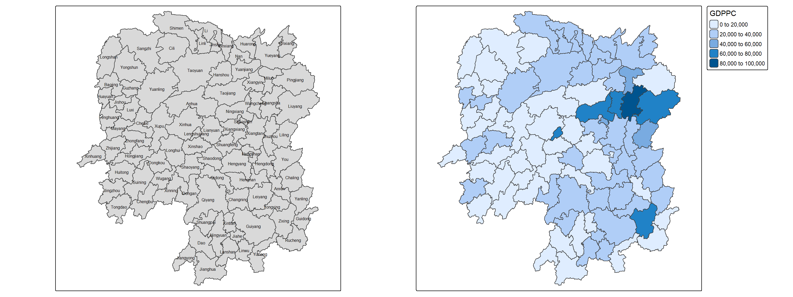
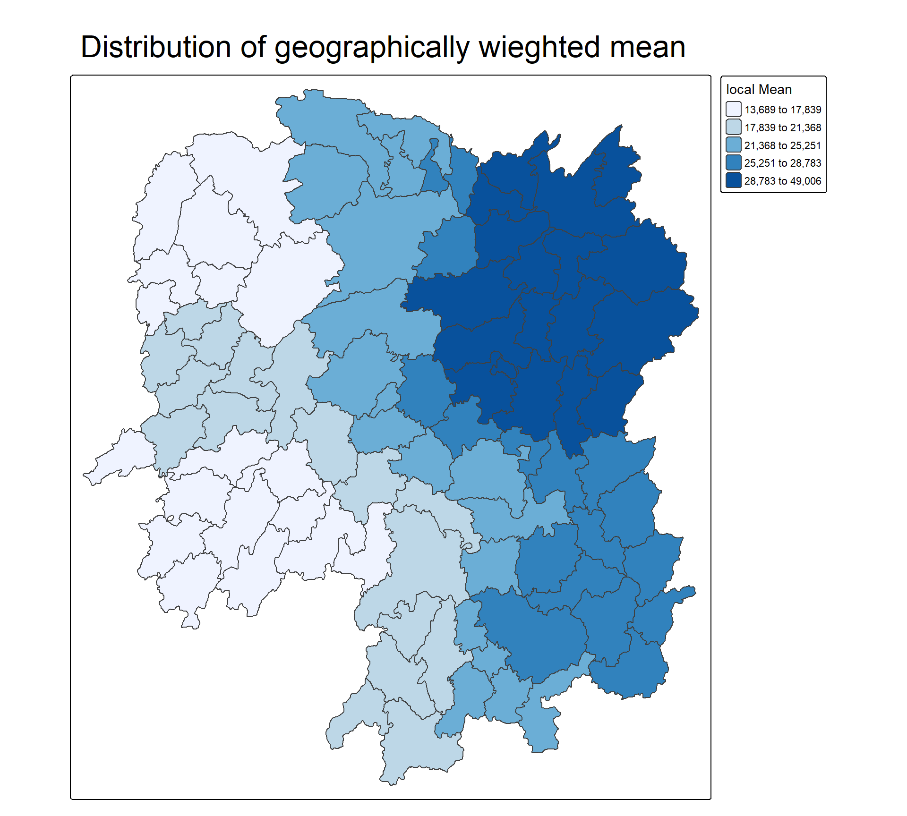
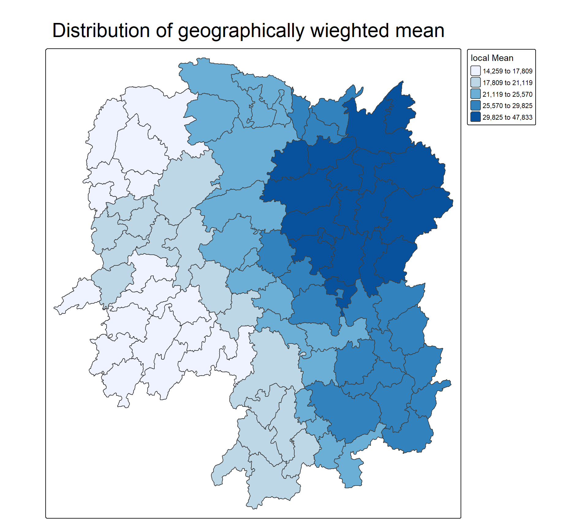
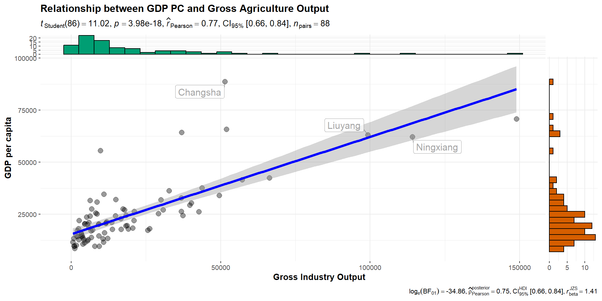
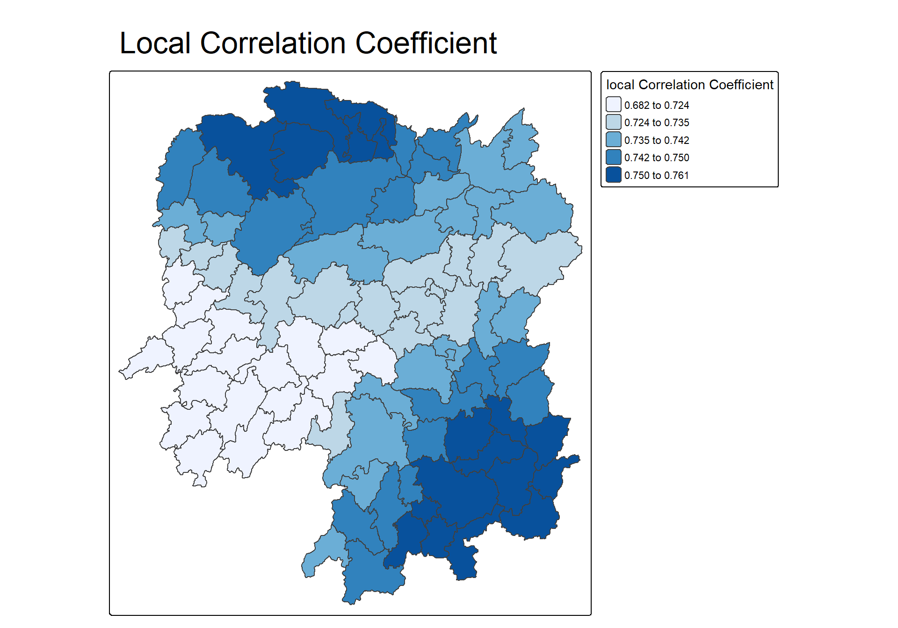
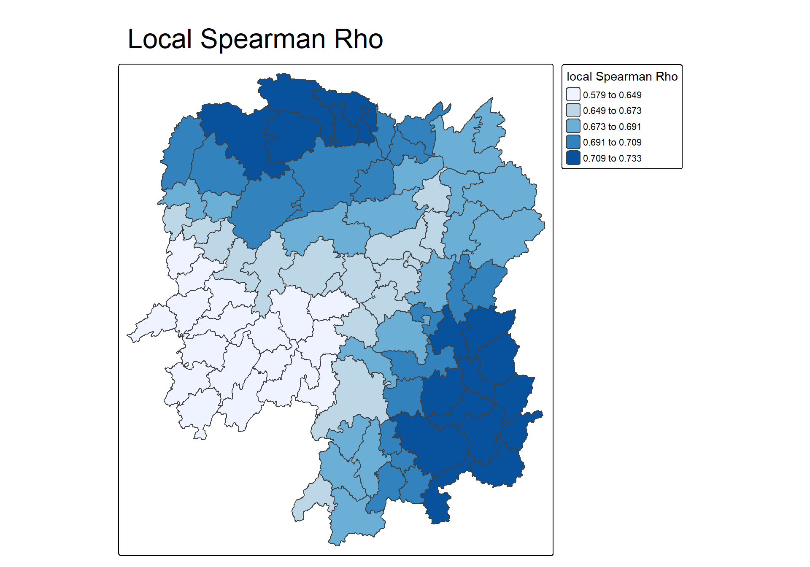

School of Computing and Information Systems,
Singapore Management University
21 Sep 2025
Geographically Weighted Summary Statistics (GWSS) are methods that calculate summary statistics (like mean, standard deviation, or median) for local areas within a dataset, rather than for the entire dataset globally.
Each calculation assigns weights to nearby data points, with closer points receiving higher weights, using a specified kernel function (e.g., bisquare or Gaussian) and bandwidth to define the neighborhood’s influence. This allows for the detection of spatial heterogeneity, where statistical relationships and patterns vary across the study area, providing more detailed and localized insights than traditional global statistics.
By the end of this in-class exercise, you will gain hands-on experience in
gwss() of GWmodel package,gwss() using appropriate choropleth mapping functions of tmap package.To complete this exercise, sf, spdep, tmap, tidyverse, knitr and GWmodel will be used.
For this in-class exercise, Hunan shapefile and Hunan_2012 data file will be used.
Using the steps you learned from previous hands-on, complete the following tasks:
Reading layer `Hunan' from data source
`C:\tskam\ISSS626-AY2025-26Aug\In-class_Ex\In-class_Ex04\data\geospatial'
using driver `ESRI Shapefile'
Simple feature collection with 88 features and 7 fields
Geometry type: POLYGON
Dimension: XY
Bounding box: xmin: 108.7831 ymin: 24.6342 xmax: 114.2544 ymax: 30.12812
Geodetic CRS: WGS 84Using the steps you learned from Hands-on Exercise 5, prepare a choropleth map showing the geographic distribution of GDPPC of Hunan Province.

Note
GWmodel presently is built around the older sp and not sf formats for handling spatial data in R.
bw_CV <- bw.gwr(GDPPC ~ 1,
data = hunan_sp,
approach = "CV",
adaptive = TRUE,
kernel = "bisquare",
longlat = T)Adaptive bandwidth: 62 CV score: 15515442343
Adaptive bandwidth: 46 CV score: 14937956887
Adaptive bandwidth: 36 CV score: 14408561608
Adaptive bandwidth: 29 CV score: 14198527496
Adaptive bandwidth: 26 CV score: 13898800611
Adaptive bandwidth: 22 CV score: 13662299974
Adaptive bandwidth: 22 CV score: 13662299974 [1] 22bw_AIC <- bw.gwr(GDPPC ~ 1,
data = hunan_sp,
approach ="AIC",
adaptive = TRUE,
kernel = "bisquare",
longlat = T)Adaptive bandwidth (number of nearest neighbours): 62 AICc value: 1923.156
Adaptive bandwidth (number of nearest neighbours): 46 AICc value: 1920.469
Adaptive bandwidth (number of nearest neighbours): 36 AICc value: 1917.324
Adaptive bandwidth (number of nearest neighbours): 29 AICc value: 1916.661
Adaptive bandwidth (number of nearest neighbours): 26 AICc value: 1914.897
Adaptive bandwidth (number of nearest neighbours): 22 AICc value: 1914.045
Adaptive bandwidth (number of nearest neighbours): 22 AICc value: 1914.045 [1] 22The code chunk below computes geographically weighted summary statistics by using gwss() of GWmodel package. The analysis is performed using adaptive distance weighted. The distance is derived using AIC method and the kernel method used id bisquare.
Note
gwss support five kernel methods, namely gaussian, exponential, bisquare, tricube, and boxcar. Repeat the code chunk above with different kernel methods and compare their results visually.
Important
gwss() with quantile argument computes eight local summary statistics, namely: local means, local standard deviations, local variance, local skew, local coefficients of variation, local Median, local medians, local interquartile ranges, and local quantile imbalances. They are output in SDF data frame.
Code chunk below is used to extract SDF data table from gwss object output from gwss() for subsequent geovilisation. It will be converted into data.frame by using as.data.frame().
Next, cbind() is used to append the newly derived data.frame onto hunan_sf sf data.frame.

tm_shape(hunan_gstat) +
tm_polygons(fill = "GDPPC_LM",
fill.scale = tm_scale_intervals(
style = "quantile",
n = 5,
values = "brewer.blues"),
fill.legend = tm_legend(
title = "local Mean")) +
tm_borders(fill_alpha = 0.5) +
tm_layout(main.title = "Distribution of geographically wieghted mean",
main.title.position = "center",
main.title.size = 2.0,
frame = TRUE)bw_CV <- bw.gwr(GDPPC ~ 1,
data = hunan_sp,
approach = "CV",
adaptive = FALSE,
kernel = "bisquare",
longlat = T)Fixed bandwidth: 357.4897 CV score: 16265191728
Fixed bandwidth: 220.985 CV score: 14954930931
Fixed bandwidth: 136.6204 CV score: 14134185837
Fixed bandwidth: 84.48025 CV score: 13693362460
Fixed bandwidth: 52.25585 CV score: Inf
Fixed bandwidth: 104.396 CV score: 13891052305
Fixed bandwidth: 72.17162 CV score: 13577893677
Fixed bandwidth: 64.56447 CV score: 14681160609
Fixed bandwidth: 76.8731 CV score: 13444716890
Fixed bandwidth: 79.77877 CV score: 13503296834
Fixed bandwidth: 75.07729 CV score: 13452450771
Fixed bandwidth: 77.98296 CV score: 13457916138
Fixed bandwidth: 76.18716 CV score: 13442911302
Fixed bandwidth: 75.76323 CV score: 13444600639
Fixed bandwidth: 76.44916 CV score: 13442994078
Fixed bandwidth: 76.02523 CV score: 13443285248
Fixed bandwidth: 76.28724 CV score: 13442844774
Fixed bandwidth: 76.34909 CV score: 13442864995
Fixed bandwidth: 76.24901 CV score: 13442855596
Fixed bandwidth: 76.31086 CV score: 13442847019
Fixed bandwidth: 76.27264 CV score: 13442846793
Fixed bandwidth: 76.29626 CV score: 13442844829
Fixed bandwidth: 76.28166 CV score: 13442845238
Fixed bandwidth: 76.29068 CV score: 13442844678
Fixed bandwidth: 76.29281 CV score: 13442844691
Fixed bandwidth: 76.28937 CV score: 13442844698
Fixed bandwidth: 76.2915 CV score: 13442844676
Fixed bandwidth: 76.292 CV score: 13442844679
Fixed bandwidth: 76.29119 CV score: 13442844676
Fixed bandwidth: 76.29099 CV score: 13442844676
Fixed bandwidth: 76.29131 CV score: 13442844676
Fixed bandwidth: 76.29138 CV score: 13442844676
Fixed bandwidth: 76.29126 CV score: 13442844676
Fixed bandwidth: 76.29123 CV score: 13442844676 [1] 76.29126bw_AIC <- bw.gwr(GDPPC ~ 1,
data = hunan_sp,
approach ="AIC",
adaptive = FALSE,
kernel = "bisquare",
longlat = T)Fixed bandwidth: 357.4897 AICc value: 1927.631
Fixed bandwidth: 220.985 AICc value: 1921.547
Fixed bandwidth: 136.6204 AICc value: 1919.993
Fixed bandwidth: 84.48025 AICc value: 1940.603
Fixed bandwidth: 168.8448 AICc value: 1919.457
Fixed bandwidth: 188.7606 AICc value: 1920.007
Fixed bandwidth: 156.5362 AICc value: 1919.41
Fixed bandwidth: 148.929 AICc value: 1919.527
Fixed bandwidth: 161.2377 AICc value: 1919.392
Fixed bandwidth: 164.1433 AICc value: 1919.403
Fixed bandwidth: 159.4419 AICc value: 1919.393
Fixed bandwidth: 162.3475 AICc value: 1919.394
Fixed bandwidth: 160.5517 AICc value: 1919.391 [1] 160.5517Code chunk below is used to extract SDF data table from gwss object output from gwss(). It will be converted into data.frame by using as.data.frame().
Next, cbind() is used to append the newly derived data.frame onto hunan_sf sf data.frame.

tm_shape(hunan_gstat) +
tm_polygons(fill = "GDPPC_LM",
fill.scale = tm_scale_intervals(
style = "quantile",
n = 5,
values = "brewer.blues"),
fill.legend = tm_legend(
title = "local Mean")) +
tm_borders(fill_alpha = 0.5) +
tm_layout(main.title = "Distribution of geographically wieghted mean",
main.title.position = "center",
main.title.size = 2.0,
frame = TRUE)Business question: Is there any relationship between GDP per capita and Gross Industry Output?

ggscatterstats(
data = hunan2012,
x = Agri,
y = GDPPC,
xlab = "Gross Agriculture Output", ## label for the x-axis
ylab = "GDP per capita",
label.var = County,
label.expression = Agri > 10000 & GDPPC > 50000,
point.label.args = list(alpha = 0.7, size = 4, color = "grey50"),
xfill = "#CC79A7",
yfill = "#009E73",
title = "Relationship between GDP PC and Gross Agriculture Output")Adaptive bandwidth (number of nearest neighbours): 62 AICc value: 1870.235
Adaptive bandwidth (number of nearest neighbours): 46 AICc value: 1870.852
Adaptive bandwidth (number of nearest neighbours): 72 AICc value: 1869.744
Adaptive bandwidth (number of nearest neighbours): 78 AICc value: 1869.713
Adaptive bandwidth (number of nearest neighbours): 82 AICc value: 1869.604
Adaptive bandwidth (number of nearest neighbours): 84 AICc value: 1869.537
Adaptive bandwidth (number of nearest neighbours): 86 AICc value: 1869.647
Adaptive bandwidth (number of nearest neighbours): 83 AICc value: 1869.567
Adaptive bandwidth (number of nearest neighbours): 84 AICc value: 1869.537 Code chunk below is used to extract SDF data table from gwss object output from gwss(). It will be converted into data.frame by using as.data.frame().
Next, cbind() is used to append the newly derived data.frame onto hunan_sf sf data.frame.


Brunsdon, C. et. al. (2002) “Geographically weighted summary statistics - a framework for localised exploratory data analysis”, Computer, Environment and Urban Systems, Vol 26, pp. 501-525. Available as e-journal, SMU library.
Harris, P. & Brunsdon, C. (2010) “Exploring spatial variation and spatial relationships in freshwater acidification critical load data set for Great Britain using geographically weighted summary statistics”, Computers & Geosciences, Vol. 36, pp. 54-70. Available as e-journal, SMU library.